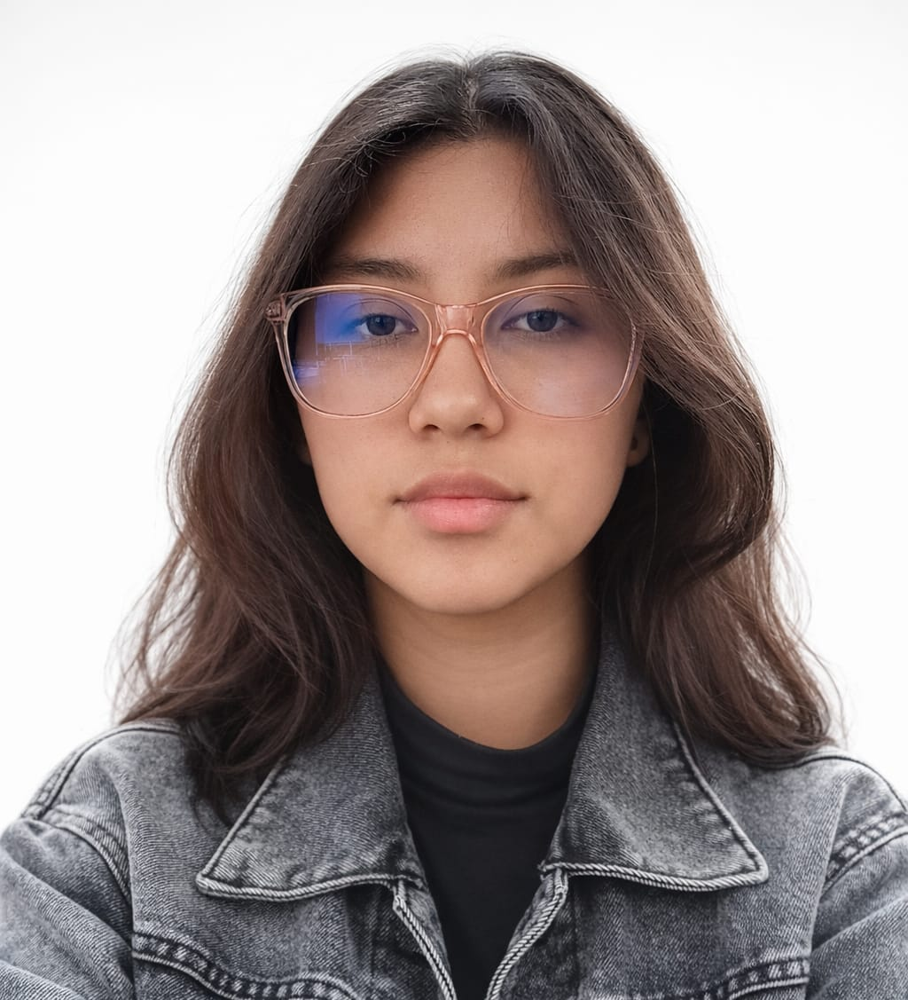

Información Personal

Estudiante de Ingeniería en Ciencias de la Computación — Ayllin Celeste Santos Chavarria.
La razón por la que decidí entrar a estudiar Ingeniería en Ciencias de la Computación tiene que ver con un cambio de planes en mi vida personal y escolar. Antes de considerar esta carrera, yo practicaba baile, una actividad a la que le dedicaba mucho tiempo. Sin embargo, debido a una lesión en la rodilla, tuve que dejar de practicarlo de manera definitiva. Este suceso me obligó a buscar otras opciones de estudio y fue así como empecé a interesarme por la tecnología. Al no poder realizar una actividad física, encontré en el área digital una nueva vocación que antes no había tomado en cuenta pero que me pareció una alternativa sólida para mi formación profesional.
Mi elección también tiene una base familiar, ya que en mi entorno cercano siempre ha habido ingenieros en informática y personas que trabajan en otros ámbitos tecnológicos. Gracias a ellos, pude conocer un poco más de cerca de qué trata el trabajo en esta área y el tipo de actividades que se realizan en el día a día. Ver este ejemplo en mi familia me ayudó a entender que la ingeniería es una opción con mucha estabilidad. No fue una decisión que tomé sola, sino que también fue influenciada por observar cómo se desarrolla el mundo laboral en este sector actualmente y las ventajas que ofrece a quienes deciden estudiar una carrera técnica.
Además, mi abuela materna fue la persona que más me impulsó a tomar esta decisión de estudiar ingeniería. Antes de fallecer, ella siempre hablaba conmigo sobre la importancia de elegir una carrera con futuro y me animaba mucho a entrar en este ámbito. Me explicaba que la tecnología es un mundo innovador y que estudiar algo relacionado me daría muchas oportunidades laborales en el futuro. Sus consejos fueron una de las razones principales por las que terminé de decidirme por esta ingeniería. Ella veía mucho potencial en este campo y sus palabras se quedaron grabadas en mi mente al momento de elegir mi camino académico.
En resumen, mi entrada a la carrera de Ingeniería en Ciencias de la Computación es el resultado de varios factores combinados. Por un lado, la lesión de rodilla que cambió mis intereses y, por otro, la influencia de mi familia y los consejos constantes de mi abuela. Considero que esta es una carrera que ofrece una formación muy completa y que se adapta bien a lo que busco ahora. Es una transición de una actividad que ya no puedo realizar a un campo profesional que tiene mucha demanda y donde se puede aprender constantemente sobre las nuevas herramientas tecnológicas que existen hoy en día.